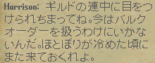

大口／小口ともに可能だが、注文書には何も結合していない状態でなければならない。


1．NPCをクリックし、「賄賂」を選択し、NPCに見せたい注文書をターゲットに指定する。
大口／小口ともに可能だが、注文書には何も結合していない状態でなければならない。
2．NPCが注文の内容に応じた金額を要求する。


3．1で指定した注文書を、NPCに渡す。
4．銀行からお金が引き落とされ、渡した注文書の品質／素材／数量のどれかが１ランクが上昇する。

5．1〜4を繰り返していくうちに、NPCが生産ギルドに目をつけられ、一時的に闇取引できなくなる。
ほとぼりが冷めるまで、実時間で2時間程度は必要で、プレイヤー側で強制的に解除する方法はない。

| 数量 ＼ 素材 |
10 | 15 | 20 | 10EX | 15EX | 20EX |
| 武器 | --- | |||||
| 防具Iron | 5 | 10 | 20 | 15 | 25 | 40 |
| Dull | 55 | 125 | 90 | 160 | 280 | |
| Shadow | 65 | 250 | 180 | 320 | 550 | |
| Copper | 100 | 375 | 280 | 480 | 820 | |
| Bronze | 125 | 220 | 500 | 360 | 650 | 1100 |
| Gold | 160 | 280 | 625 | 450 | 800 | 1380 |
| Agapite | 200 | 330 | 750 | 550 | 960 | 1660 |
| Verite | 220 | 380 | 875 | 640 | 1120 | 1970 |
| Valorite | 500 | 875 | 1500 | 1120 | 1970 | --- |
| 数量 ＼ 素材 |
10 | 15 | 20 | 10EX | 15EX | 20EX |
| 武器 | 150 | 120 | 200 | --- | ||
| 防具Iron | 40 | 75 | ||||
| Dull | 150 | 275 | 625 | 475 | 825 | 1425 |
| Shadow | 320 | 550 | 1250 | 925 | 1650 | 2825 |
| Copper | 480 | 825 | 1880 | 1425 | 2450 | 4225 |
| Bronze | 625 | 1100 | 2500 | 1875 | 3275 | 5625 |
| Gold | 780 | 1380 | 3120 | 2325 | 4100 | 7025 |
| Agapite | 925 | 1650 | 3750 | 2825 | 4900 | 8450 |
| Verite | 1100 | 1920 | 4380 | 3275 | 5725 | 9850 |
| Valorite | 2500 | 4380 | 7500 | 5625 | 9850 | --- |
| 数量 ＼ 素材 |
10 | 15 | 20 | 10EX | 15EX | 20EX |
| 布 | 10 | 20 | 35 | 25 | 40 | --- |
| 標準革 | 10 | 25 | 20 | 30 | 50 | |
| Spined | 75 | 140 | 325 | 250 | 450 | 750 |
| Horned | 150 | 280 | 650 | 480 | 860 | 1480 |
| Barbed | 480 | 860 | 1480 | 1100 | 1940 | --- |
| 数量 ＼ 素材 |
10 | 15 | 20 | 10EX | 15EX | 20EX |
| 布 | 100 | 175 | 300 | 225 | 400 | --- |
| 標準革 | 200 | 150 | 260 | 450 | ||
| Spined | 825 | 1450 | 2500 | 4375 | 7500 | |
| Horned | 2925 | 6675 | 5000 | 8750 | 15000 | |
| Barbed | 5000 | 8750 | 15000 | 11250 | 19700 | --- |